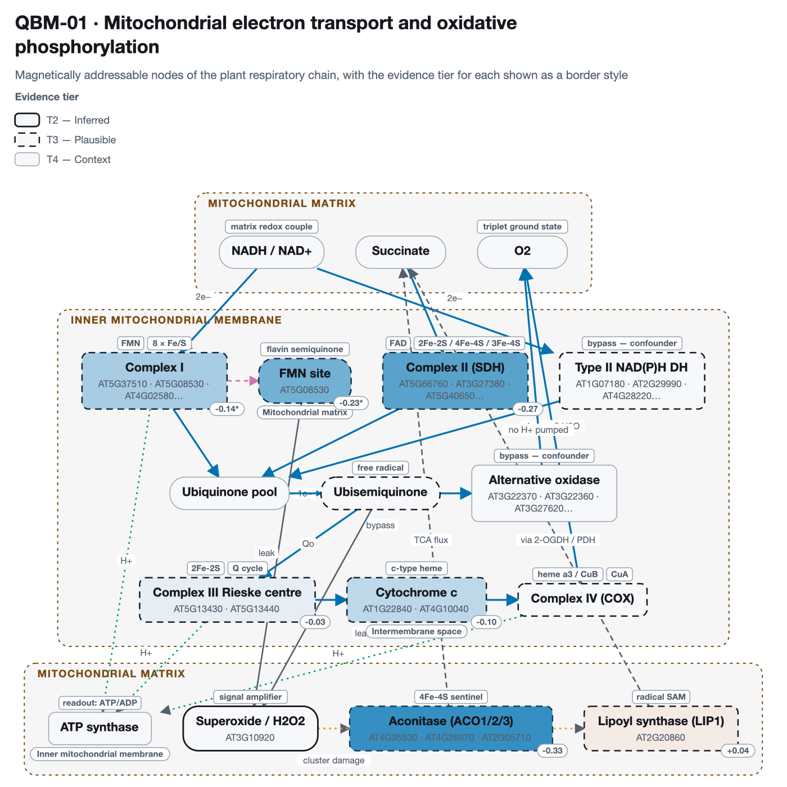
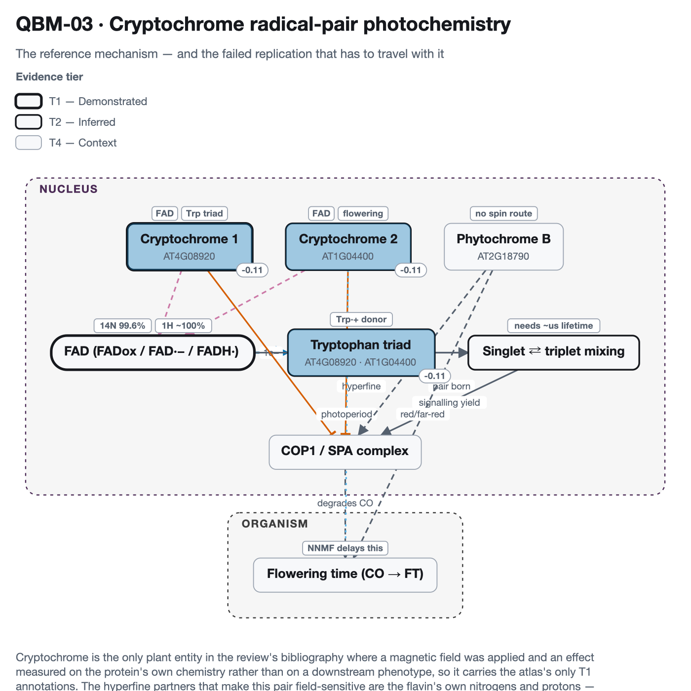
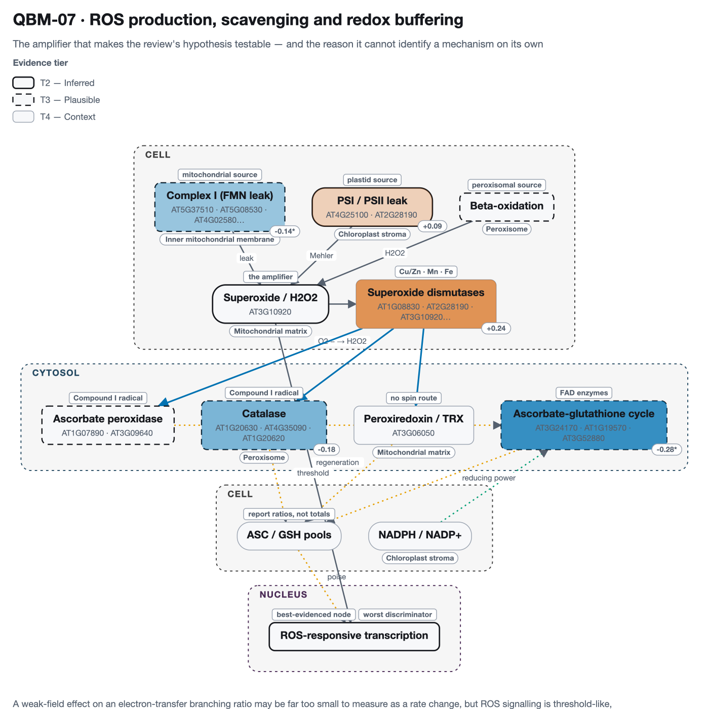

Transcription profiling of Drosophila exposed to a levitation magnet for different lengths of time — NASA OSDR OSD-27, doi:10.1186/1471-2164-13-52. This is the page where the cross-species machinery does real work, and where it is easiest to see what that machinery costs.
The result is null, and that is the finding. Across 5 independent field-isolating contrasts — two sexes, three exposure durations — not one of the 15 nodes with data moves in the same direction in all five. The largest mean effect on any node is 0.099 log2 fold change, about a 7% change.
This is not a coverage failure. Coverage here is 70% on QBM-01, 75% on QBM-03, 62% on QBM-07 — better than several pages in this atlas that do show structure. The nodes were measured; they simply did not agree.
Herranz et al.'s own abstract states that “a strong magnetic field, of 16.5 Tesla, had a significant effect on the expression of these genes, independent of the effects associated with magnetically-induced levitation and hypergravity”. That is a finding about the fly transcriptome. This page reports a null. Both can be true, and the difference is worth being precise about:
So the honest summary is narrow: the quantum-chemistry nodes this atlas cares about are not where that reported effect shows up consistently. Nothing here argues the effect is absent.
It is a strong-field study. Roughly
16.5 T, against the ~50 µT geomagnetic field the review
is about. Those are opposite ends of the same axis, about six orders of magnitude apart.
QBO's field_regimes vocabulary spans both, so the data is in scope — but
nothing here should be read as evidence about near-null fields, and a node that does not
respond at 16.5 T has not thereby been shown insensitive at 30 nT.
Diamagnetic levitation confounds field with gravity. Inside the bore, position determines effective gravity, so 0g*, 1g* and 2g* all occur at high field. Most of the study's 420 contrasts change field and gravity together. Only these 5 compare the magnet against Earth at matched effective gravity, duration, temperature and sex:
| Duration | Temperature | Sex |
|---|---|---|
| 22 day | 19 °C | Male |
| 26 hour | 14 °C | Female |
| 26 hour | 14 °C | Male |
| 5 day | 24 °C | Female |
| 5 day | 24 °C | Male |
Every other comparison in the file was excluded. Five contrasts are five replications of one question, not five results — so the evidence on this page is whether a node moves the same way across them, not whether it moves at all in one.
The ontology is anchored on Arabidopsis. Reaching the fly means asking, for
each locus, what the corresponding gene is — here through Ensembl Compara
pan_homology, the only division that crosses kingdoms.
63 of 125 atlas loci map
(50%), 12 of them one-to-one.
Only one backbone could run. The committed OrthoDB matrix is
human-anchored and has no Drosophila column, so this projection has no second
method to corroborate it. That is stated rather than left to look like agreement:
ensembl_pan_homology.
Where it lands is worth seeing on its own. Arabidopsis CRY1
(AT4G08920) projects onto Drosophila
FBgn0025680 — cry, the canonical
animal magnetoreceptor — in a dataset where the flies were sitting in a superconducting
magnet. A plant-anchored quantum ontology reaches the one animal gene the
radical-pair literature is built on.
An ortholog call is not an identity, and a finished figure gives no sign of how much of the map's own structure survived the crossing. Two collapses happen here, both real and neither an error in the orthology — they are true statements about how plant and fly gene families correspond. They are errors only if left unsaid.
Distinct nodes landing on the same fly gene. When this happens the nodes carry identical numbers, and a reader sees agreement between independent measurements that are one measurement drawn several times.
| Map | Nodes that collapse together | Shared fly gene(s) |
|---|---|---|
| QBM-03 | CRY1, CRY2, TRP_TRIAD | FBgn0025680 |
| QBM-01 | COMPLEX_I, COMPLEX_I_FMN | FBgn0031771 FBgn0034007 FBgn0034251 |
| QBM-07 | PLASTID_ROS, SUPEROXIDE_DISMUTASES | FBgn0003462 FBgn0039386 |
The cryptochrome map is the severe case: CRY1, CRY2 and
the Trp-triad node all project onto the single fly gene cry. On
QBM-03 the three are distinct entities with different evidence; in the fly they are one
number shown three times. The complex I pair is benign by comparison — the FMN site
is part of complex I, so sharing subunits is what should happen.
One node averaging very many fly genes. A node standing for one gene and a node standing for forty are not measuring the same kind of thing, and nothing on the map distinguishes them.
ASC_GSH_CYCLE on QBM-07 averages 39 fly genes, reached from AT3G24170 AT1G19570 AT3G52880 — largely the glutathione S-transferase family. Its value should be read as 'something in a large family', not as a measurement of the ascorbate–glutathione cycle.One panel per map, showing the first contrast, on a colour scale fixed across all 5 so the panels are comparable rather than each self-normalised. The full per-contrast values are in the table below — the panel is an illustration, the table is the evidence.

Data: OSD-27, contrast (22 day & 1G by magnetic levitator & 19 degree Celsius & Male)v(22 day & 1G on Earth & 19 degree Celsius & Male). organism Drosophila melanogaster. 7 of 10 identifier-bearing nodes received a value (70%); 7 nodes carry no gene identifier and cannot. multi-locus nodes aggregated by mean. significance at adjusted p ≤ 0.05. orthology arabidopsis_thaliana → drosophila_melanogaster via ensembl_pan_homology (15/28 loci, 0 method disagreements). no measurement found for: ALT_NADH_DH, AOX, MITO_SUPEROXIDE.

Data: OSD-27, contrast (22 day & 1G by magnetic levitator & 19 degree Celsius & Male)v(22 day & 1G on Earth & 19 degree Celsius & Male). organism Drosophila melanogaster. 3 of 4 identifier-bearing nodes received a value (75%); 4 nodes carry no gene identifier and cannot. multi-locus nodes aggregated by mean. significance at adjusted p ≤ 0.05. orthology arabidopsis_thaliana → drosophila_melanogaster via ensembl_pan_homology (2/3 loci, 0 method disagreements). no measurement found for: PHYB.

Data: OSD-27, contrast (22 day & 1G by magnetic levitator & 19 degree Celsius & Male)v(22 day & 1G on Earth & 19 degree Celsius & Male). organism Drosophila melanogaster. 5 of 8 identifier-bearing nodes received a value (62%); 4 nodes carry no gene identifier and cannot. multi-locus nodes aggregated by mean. significance at adjusted p ≤ 0.05. orthology arabidopsis_thaliana → drosophila_melanogaster via ensembl_pan_homology (14/17 loci, 0 method disagreements). no measurement found for: MITO_SUPEROXIDE, ASCORBATE_PEROXIDASE, PEROXIREDOXIN_TRX.
The actual evidence. ▲ is up in the magnet, ▼ is down, and
* marks significance at adjusted p ≤ 0.05. A node with five arrows
the same way would be a finding; none has.
| Node | Tier | Fly genes | Direction | 22day M | 26hour F | 26hour M | 5day F | 5day M | Mean | Verdict |
|---|---|---|---|---|---|---|---|---|---|---|
| CYTOCHROME_C | T3 | 2 | ▼▼▼▲▼ | -0.101 | -0.018 | -0.113 | +0.029 | -0.217 | -0.084 | mixed |
| COMPLEX_II | T3 | 2 | ▼▲▲▲▼ | -0.273 | +0.007 | +0.043 | +0.078 | -0.149 | -0.059 | mixed |
| ACONITASE | T3 | 1 | ▼▲▲▲▲ | -0.331 | +0.216 | +0.121 | +0.095 | +0.177 | +0.056 | mixed |
| RIESKE_FES | T3 | 1 | ▼▲▼▲▲ | -0.032 | +0.052 | -0.082 | +0.231 | +0.098 | +0.054 | mixed |
| COMPLEX_I | T3 | 7 | ▼*▲▼▲▼ | -0.139* | +0.054 | -0.104 | +0.104 | -0.090 | -0.035 | mixed |
| COMPLEX_I_FMN | T3 | 3 | ▼*▲▲▲▼ | -0.227* | +0.053 | +0.049 | +0.006 | -0.001 | -0.024 | mixed |
| LIPOYL_SYNTHASE | T3 | 1 | ▲▲▲▼▼ | +0.037 | +0.048 | +0.116 | -0.064 | -0.111 | +0.005 | mixed |
Scroll the table sideways to see every contrast.
| Node | Tier | Fly genes | Direction | 22day M | 26hour F | 26hour M | 5day F | 5day M | Mean | Verdict |
|---|---|---|---|---|---|---|---|---|---|---|
| CRY1 | T1 | 1 | ▼▲▼▲▼ | -0.111 | +0.218 | -0.242 | +0.181 | -0.169 | -0.025 | mixed |
| CRY2 | T2 | 1 | ▼▲▼▲▼ | -0.111 | +0.218 | -0.242 | +0.181 | -0.169 | -0.025 | mixed |
| TRP_TRIAD | T2 | 1 | ▼▲▼▲▼ | -0.111 | +0.218 | -0.242 | +0.181 | -0.169 | -0.025 | mixed |
Scroll the table sideways to see every contrast.
| Node | Tier | Fly genes | Direction | 22day M | 26hour F | 26hour M | 5day F | 5day M | Mean | Verdict |
|---|---|---|---|---|---|---|---|---|---|---|
| ASC_GSH_CYCLE | T3 | 39 | ▼*▲▼▼▼ | -0.282* | +0.034 | -0.000 | -0.052 | -0.194 | -0.099 | mixed |
| COMPLEX_I | T3 | 7 | ▼*▲▼▲▼ | -0.139* | +0.054 | -0.104 | +0.104 | -0.090 | -0.035 | mixed |
| CATALASE | T3 | 2 | ▼▲▲▼▼ | -0.181 | +0.066 | +0.065 | -0.118 | -0.004 | -0.034 | mixed |
| PLASTID_ROS | T2 | 2 | ▲▼▼▲▲ | +0.094 | -0.046 | -0.170 | +0.112 | +0.045 | +0.007 | mixed |
| SUPEROXIDE_DISMUTASES | T4 | 3 | ▲▼▼▼▲ | +0.238 | -0.048 | -0.115 | -0.140 | +0.065 | +0.000 | mixed |
Scroll the table sideways to see every contrast.
PYTHONPATH=src python3 scripts/build_osd27_showcase.py
PYTHONPATH=src python3 scripts/build_osd27_page.pyThe differential-expression table at OSDR is ~623 MB across ~1,690 columns.
qbio.osd27 streams it a row at a time and keeps only the
5 contrasts' columns, so the cached slice is a few hundred KB. Coverage,
per-contrast values and the collapse analysis are written to
results/osd27/record.json, and this
page is generated from that record.
{kind=link}
{kind=link}
{kind=link}